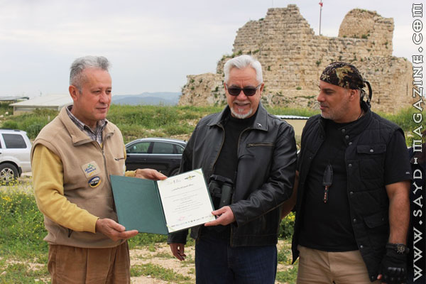
قام مركز الشرق الأوسط للصيد المستدام MESHC بالتعاون مع جمعية حماية الطبيعة في لبنان SPNL برحلة ضمّت مجموعة من الصيادين وعائلاتهم في 27/28/29 نيسان انطلقت من بيروت نحو الجنوب – البقاع الغربي – البقاع الشمالي – شمال لبنان، الى بيروت، تحت عنوان " رحلة السلام بين الإنسان والطير والشجر " في خطوة معطوفة على الاعلان الذي كان قد أطلقه فخامة رئيس الجمهورية العماد ميشال عون بهذا الخصوص، وذلك لتسليم " رسالة مسؤولية وتعاون " (لحماية الطيور المهاجرة التي تمر فوق لبنان ولحماية الطيور المفقسة في فصل الربيع)، الى رؤساء جمعيات وفاعليات على مسار خط الرحلة، وايضا الى اعطاء رسومات من قبل اولاد الصيادين الى الاطفال الذي حضروا لاستقبال الموكب، كتب عليها "هيدا طير للتلوين .. مش للصيد " وقد اكد رئيس MESHC – مدير ملف الصيد في SPNL ادونيس الخطيب في محطات الرحلة الستة على ان المسؤولية لا يتحملها الا الذين يتمتعون بوعي وضمير حي ورؤية ثاقبة نحو المستقبل وعشق حقيقي للطبيعة. ولهذا تم اللقاء في الجنوب مع رئيس التجمع اللبناني للبيئة - رئيس جمعية أمواج الاستاذ مالك غندور بحضور مدير عام جمعية حماية الطبيعة في لبنان – المستشار الدولي في المجلس العالمي للطيور الاستاذ أسعد سرحال. وفي البقاع الغربي مع سعادة النائب هنري شديد في الويست بقاع كونتري كلوب. وفي البقاع الأوسط مع رئيس مجموعة اساطير الصيد – هواة الصيد البري ظافر النخلاوي . وفي الهرمل مع رئيس نادي الهرمل الثقافي الرياضي الاستاذ اسماعيل شاهين في قرية العاصي. وفي الضنّية مع رئيس جمعية انصار البيئة الاستاذ محمد فتفت، وفي الكورة مع رئيس جمعية بيت الصياد الاستاذ أحمد بدر حسوّن في القرية التراثية في خان الصابون، حيث كانت كلمة ختام الرحلة التي شكر فيها الخطيب جمع الذين استقبلوا الرحالة وواكبوا سلامة الرحلة في السر والعلن من قادة في قوى الأمن الداخلي، قائد منطقة الجنوب العميد غسان شمس الدين، وقائد منطقة البقاع العقيد ربيع مجاعص وقائد منطقة الشمال العقيد يوسف درويش.
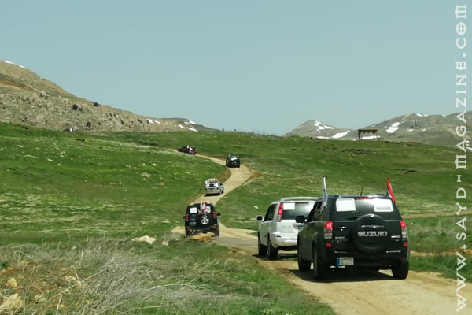
في التفاصيل كانت المحطة الأولى للرحلة في قلعة شقيف أرنون في الجنوب، مع رئيس التجمع اللبناني للبيئة – رئيس جمعية أمواج الاستاذ مالك غندور بحضور مدير عام SPNL – المستشار الدولي للمجلس العالمي للطيور أسعد سرحال .وقدم رئيس مركز الشرق الأوسط للصيد المستدام – مدير ملف الصيد المسؤول في SPNL ادونيس الخطيب رسالة الرحلة، فيما قدم أطفال الصيادين الى الاطفال هناك صور لطيور مهاجرة كتب عليها " هيدا طير للتلوين مش طير للصيد "
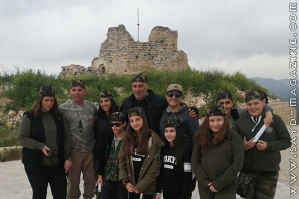

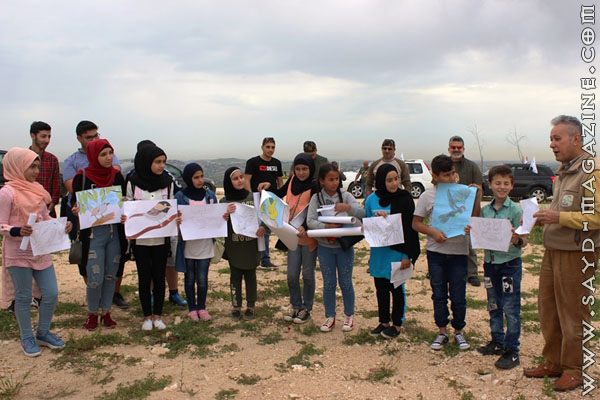

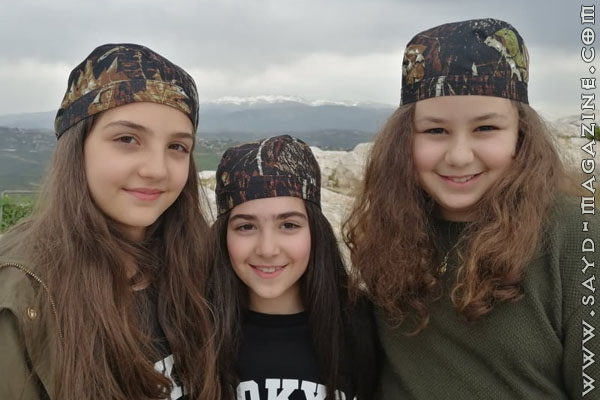

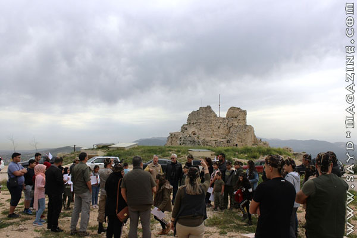
في المحطة الثالثة زار الموكب رئيس مجموعة اساطير الصيد – هواة الصيد البري السيد ظافر النخلاوي في مزرعته في منطقة قب الياس وتم تسليم الرسالة له بحضور أعضاء من صيادي المجموعة، وقد أكد النخلاوي على المتابعة مع المركز في نهج التوعية والتواصل مع الصيادين لإعادة هواية الصيد الى مكانتها الراقية، وأكد على الإلتزام في حماية ممر هجرة الطيور فوق البقاع الغربي وتعزيز ثقافة مراقبة الطيور وتصويرها خصوصا في فصل الربيع. وقد التقط المشاركون الصور الجميلة وهم يطعمون الغزلان والاحصنة في مزرعة النخلاوي .
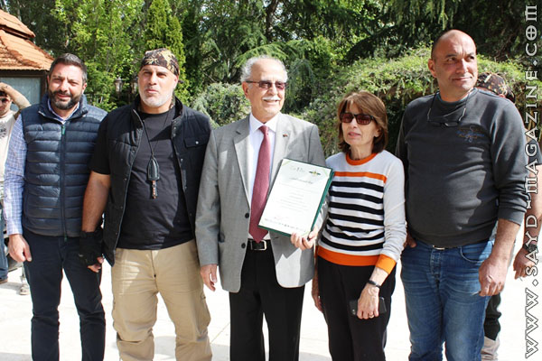

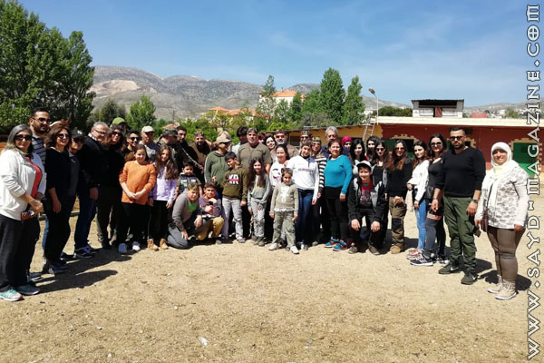

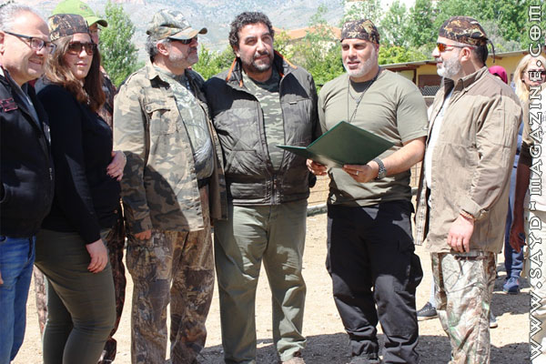
اما في المحطة الرابعة فقد زار الصيادون مغارة مار مارون على ضفة نبع نهر العاصي في الهرمل وشرحوا للناسك هناك عن هدف الرحلة، وقد اشاد بوعي الصيادين وتحدث عن نظرة الدين لعدم الاعتداء على مخلوقات الله بهدف التسلية، ودعا الى احترام قانون الصيد وعدم التعرّض للطيور المهاجرة.. وقد كانت لافتا في هذه الاثناء مجموعة من الطيور المهاجرة تحوم على ارتفاع متوسط فوق المغارة . وبعدها أقام الصيادون مخيّمهم في قرية العاصي بعد ان التقوا برئيس نادي الهرمل الثقافي الرياضي السيد اسماعيل شاهين وعدد من اعضاء النادي، وتسلم شاهين من الخطيب رسالة الرحلة كما تسلم رسومات طيور مهاجرة لتوزيع على اكثر من 100 طفل في الهرمل لتلوينها .. كما نفذ المشاركون جولة رافتينغ في نهر العاصي للتأكيد على ان الصياد لديه حب المغامرة ويعشق رياضات الطبيعة ويمارسها خارج موسم الصيد.
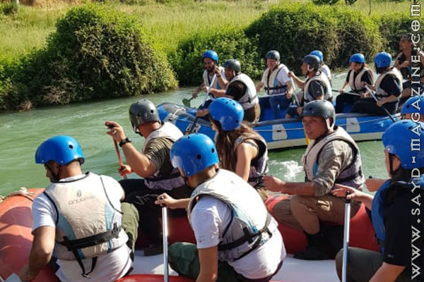

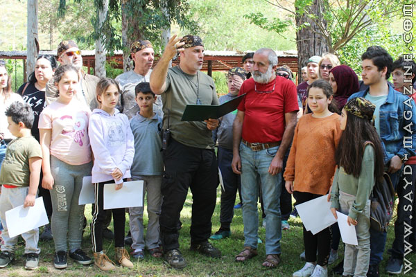

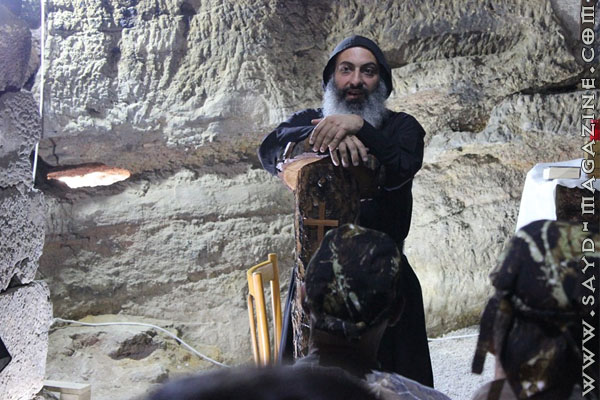
وفي المحطة الخامسة في الضنّية شمال لبنان التقى الصيادون رئيس جمعية انصار البيئة الاستاذ محمد فتفت الذي تسلم رسالة الرحلة من رئيس MESHC وأكد على التواصل الدائم مع جمعية حماية الطبيعة والمركز للحد من قتل الطيور المهاجرة فوق الضنّية التي تعتبر منطقة خطرة على هذه الطيور بسبب ما يقوم به القواصون من قتل لا يمت الى اخلاق الصيد بصلة. وزار المشاركون مغارة الزحلان، والبرج في جبل الاربعين بعد ان تمتعوا بمناظر وديان الضنّية الخلابة التي وصلوا اليها من جهة جرود الهرمل.
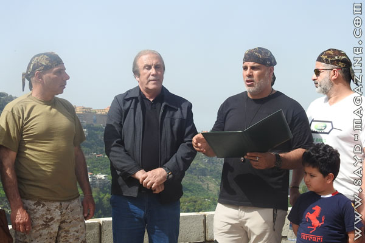

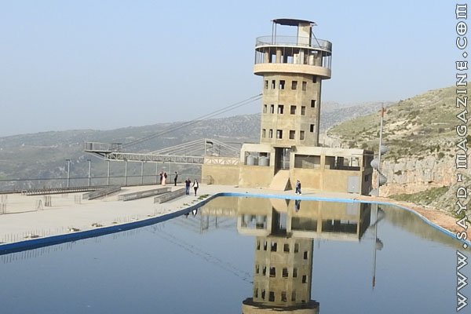

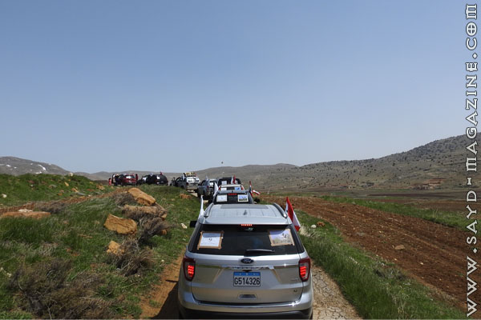

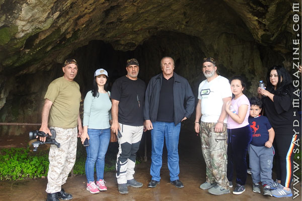

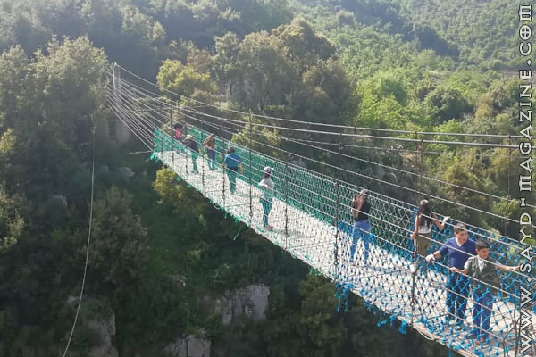
وكان المحطة السادسة والاخيرة في الكورة مع رئيس جمعية بيت الصياد الاستاذ احمد بدر حسون في مقر الجمعية في القرية التراثية في خان الصابون، وقد تسلم حسون رسالة الرحلة من الخطيب امام صحفيين من تلفزيون المنار ومواقع الكترونية اخرى، وقد أكد حسون ان التعاون مع المركز ليس وليد اليوم بل هناك تنسيق دائم في كل النشاطات وقد اقام المركز معرض "صيد الربيع صيد العدسة" في مقرنا وهناك تعاون اليوم بخصوص مكافحة الصيد الجائر في منطقة الشمال . وبعدها جال المشاركون في خان الصابون الذي قدم هدايا رمزية لهم ومارس الاولاد لعبة الحفر على الصابون .
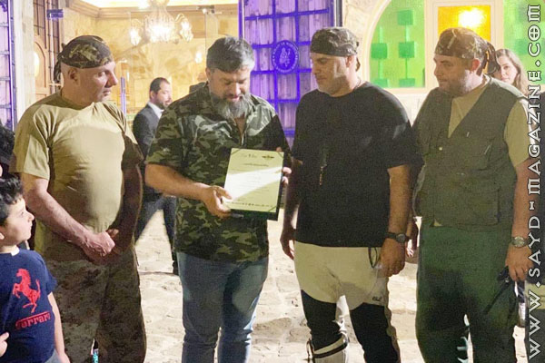

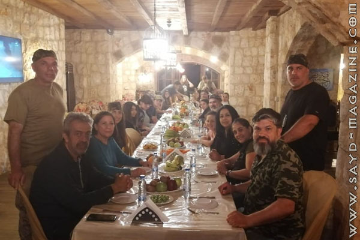

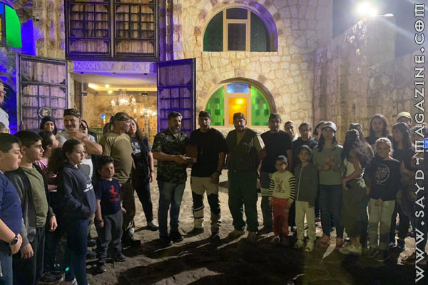

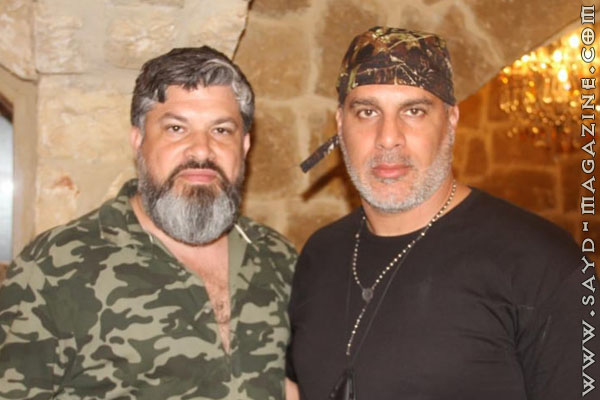